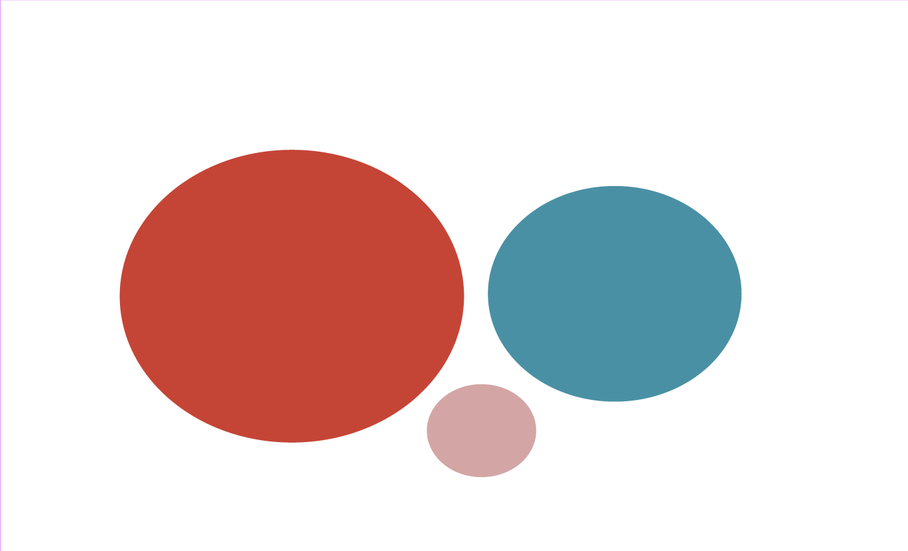

Online makeup creators have been sounding the alarm: iconic lipstick shades are not the same color they used to be. By comparing modern products to vintage versions from decades past, creators like Emily Harper have reached a conclusion that's hard to ignore. The shades are getting warmer.
A Quiet Admission
In January 2025, MAC Cosmetics launched Cool Spice, a lip liner meant to replicate the original 1990s Spice shade. The move raised an obvious question: why re-release a product that's still on shelves?
Because the current Spice isn't the same color anymore.
"As formulas changed and labs moved countries, the colour of Spice shifted and the modern day shade now runs much warmer and more orange than the original cool tone," according to Dazed Digital.
MAC did not respond to requests for comment. But the company's product launches tell their own story. Spice isn't alone in getting a cooler counterpart.
Ruby Woo, the brand's iconic blue-based red launched in 1999, now has Ruby New, described by MAC as a "softer, more modern" alternative that beauty bloggers have called lighter and pinker than the original. Velvet Teddy, the bestselling nude from 2013, spawned both Cool Teddy and Warm Teddy variants after customers complained the shade had shifted.
On the Sales Floor
"I have noticed that formulas have changed and leaned warmer. Though I'm not sure which ones," said Rosanna Carpentier, an Ulta Beauty employee.
Carpentier said customers regularly complain about formula changes to individual products. A Sephora store manager, who declined to be named, said she had not personally observed the warming trend but acknowledged hearing similar complaints.
The uncertainty reflects how gradual the shifts have been. These aren't dramatic overnight changes; they're slow warmings that accumulate across years of reformulation, often imperceptible until a longtime customer repurchases a shade they haven't worn in years.
Beyond the Big Names
The warming trend extends past MAC's most famous shades. Beauty reviewers have documented shifts in Sweet Deal, a 2015 shade that was originally purple-toned but now reads "lighter and warmer-toned, with much less purple." Whirl, launched in 2014, has been described as "slightly lighter and a tiny bit pinker" than its original formula. Fleshpot, a 1998 shade, has drifted noticeably warmer according to comparison reviews.
In each case, the pattern is the same: cool undertones fading toward orange and pink.
Tracking the Shift
Based on documented reviews and MAC's own product descriptions, the undertone changes in reformulated shades follow a consistent pattern, all moving in the same direction on the color temperature spectrum.
A Warm-Toned Catalog
An analysis of 111 MAC lipstick shades from the Temptalia beauty database shows the brand's current lineup leans heavily warm, a ratio of nearly 2 to 1.

MAC Runs Warm
Undertone distribution across 111 MAC lipstick shades
Cool
33%
Warm
56%
Neutral
5%
Chart: Kylie Clifton | Source: Temptalia MAC lipstick database
MAC Runs Warm
Undertone distribution across 111 MAC lipstick shades
Warm
56%
Cool
33%
Neutral
5%
Chart: Kylie Clifton | Source: Temptalia MAC lipstick database
MAC Runs Warm
Undertone distribution across 111 MAC lipstick shades
Warm
56%
Cool
33%
Neutral
5%
Chart: Kylie Clifton | Source: Temptalia MAC lipstick database
More than half of MAC's shades, 56%, are classified as warm-toned. Just 33% are cool. The neutral middle ground accounts for only 5% of the lineup.
What It Means for Shoppers
For consumers who fell in love with a shade years ago, these shifts create a frustrating reality: repurchasing the "same" lipstick might yield a noticeably different color. The lip liner that matched your skin tone in 2010 might pull orange today.
MAC's solution, releasing "Cool" versions of shifted shades, acknowledges the problem. But it also means longtime customers must now navigate an expanding catalog to find what they thought they already owned.
The company has not publicly explained why the shifts occurred or whether more "corrected" shades are planned. For now, the Cool Spice launch stands as the closest thing to an official admission: the originals changed, and the brand knows it.